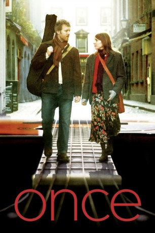

#182 Once
Auszeichnungen: 1 Oscars gewonnen
 gesehen am 09.03.2015
gesehen am 09.03.2015
 
 IMDB-Wertung: 7.9 / 10
IMDB-Wertung: 7.9 / 10  Metascore: 88
Metascore: 88 
Ein junger Mann steht in der Fußgängerzone Dublins und singt sich beim Gitarrenspiel die Seele aus dem Leib. Die Passanten hasten vorbei, eine Blumenverkäuferin wirft ein paar Pennys in seinen Gitarrenkasten. Sie kommen ins Gespräch. Er hat den Traum, ein Demoband für eine Plattenfirma in London aufzunehmen, und sie soll als Bandmitglied dabei sein. Bis zur totalen Erschöpfung probt die zusammen gewürfelte Gruppe und ganz langsam wächst das Gefühl, für einander bestimmt zu sein. Aber das Leben hat etwas anderes mit ihnen vor.
Jahr: 2007
Dauer: 85 Minuten
FSK: 0
Land: Irland Studio: Kinowelt FilmverleihTonspuren:
Untertitel:
Auflösung: 1080p (1920×1080) Größe: 6584 MB
Genre: Drama, Musik, Liebe
Regisseur: John Carney
Drehbuch: John Carney
Soundtrack: Glen Hansard, Markéta Irglová
Darsteller:
- Glen Hansard als Guy
- Markéta Irglová als Girl
- Marcella Plunkett als Ex Girlfriend
- Keith Byrne als Guy in Piano Shop
- Hugh Walsh als Timmy Drummer
- Gerard Hendrick als Lead Guitarist
- Alaistair Foley als Bassist
- Geoff Minogue als Eamon
- Bill Hodnett als Guy's Dad
- Danuse Ktrestova als Girl's Mother
- Darren Healy als Heroin Addict
- Mal Whyte als Bill
- Niall Cleary als Bob
- Wiltold Owski als Man watching TV
- Krzysztos Tlotka als Man watching TV
- Tomek Glowacki als Man watching TV
- Attila Kouvacs als Man watching TV
- Sean Miller als Bank Manager
- Pat McGrath als Drunk
- Praghosa als Hari Krishna
- Kate Haugh als Baby
- Senan Haugh als Husband
- Catherine Hansard als Singer at party
- Pete Short als Singer at party
- Fergus O'Farrell als Singer at Party
- Bob Hoban als Shop Assistant Bogarts
- Martina Akindojctimi als Person on Stoop
- Ruslan Mannanu als Person on Stoop
- Francis Usanga als Person on Stoop
- Prince Tylot Khumaho als Person on Stoop
- Joe Adebe als Person on Stoop
- Bernard Gibsenen als Shop Assistant
- Paul Clarke als Shop Assistant
- Maire Walsh als Woman on Bus
- Dave Cleary als Host at Party
Datei: X:\2006(N-Z)\Once (2006, FSKo.Al., 1920x1080).mkv seit 14.02.2015
Festplatte: HD 2005(G-Z)-2006(A-Z)
 Es gibt insgesamt 62 Filme in der Gruppe '2006(N-Z)'
Es gibt insgesamt 62 Filme in der Gruppe '2006(N-Z)'